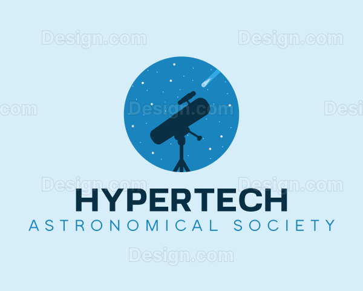

The basic Interactive Solar System Model can be operated using the instructions on the bottom-left, or using the sliders on the top-right of the model. You can focus on different objects (the sun and all planets) using the 'Focus on' drop down bar. To zoom in on these objects, use the 'Zoom' slider. You can change the camera height and angle using the 'Camera Angle' and 'Camera Height' sliders. The orbit lines can also be switched off. You can also slow down time using the 'Orbit Speed' slider. The slowest you can set the time to is: 30 seconds = 1 earth day. The fastest is: 0.01 seconds = 1 earth day. You currently cannot set it to real time. The amount of times it is sped up by is also displayed in times under the 'Orbit Speed' slider.